Step 01 · J01, J27, J32
Research library
PartialThe quiet list and search work. Counts alone do not reveal the market, current research stage, chosen result or next action.
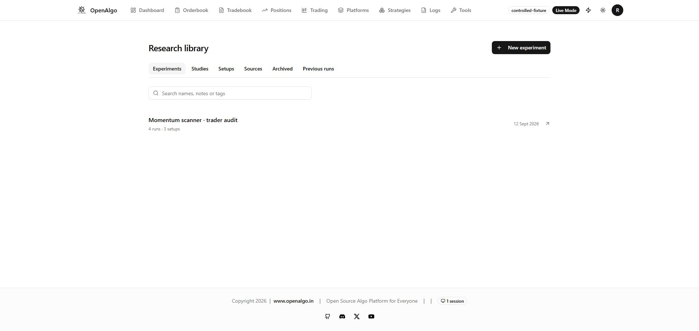
OpenAlgo Research · 12 September 2026 · audited runtime 52ee878
Keep the calculation and evidence foundations. Make it easy to move from a result to a deliberate decision, a reusable setup and a later review.
Full audit and all findings · Prioritized development plan
Quick test: scanner/CSV → trading rules → backtest → inspect → keep/reject or export → reopen.
Research: baseline → optimize → investigate candidates → optional comparison → reserved evaluation → decision → chosen setup/review.
Comparison should be optional. The optimizer's best score is not the trader's chosen setup.
The installed app and Git matched the latest runtime checkpoint. Fresh UI work used the native React/Flask Research feature with controlled prices and actual VectorBT/Optuna calculations. 26 screenshots were saved and inspected; all 34 planned journeys were source-reviewed using the refreshed Graphify map.
The normal account was at login. This audit did not repeat live broker downloads, Chartink extension capture, interrupted-worker recovery, multi-strategy/Nautilus execution, cross-device concurrency or release installation. The synthetic host label and Live Mode badge do not indicate a brokerage connection. No orders or normal-account research changes were made. This is an expert audit, not unaided-user or full accessibility acceptance.
Step 01 · J01, J27, J32
The quiet list and search work. Counts alone do not reveal the market, current research stage, chosen result or next action.

Step 02 · J01
A small, focused one-field dialog starts research without forcing a calculation. Keep this simplicity.
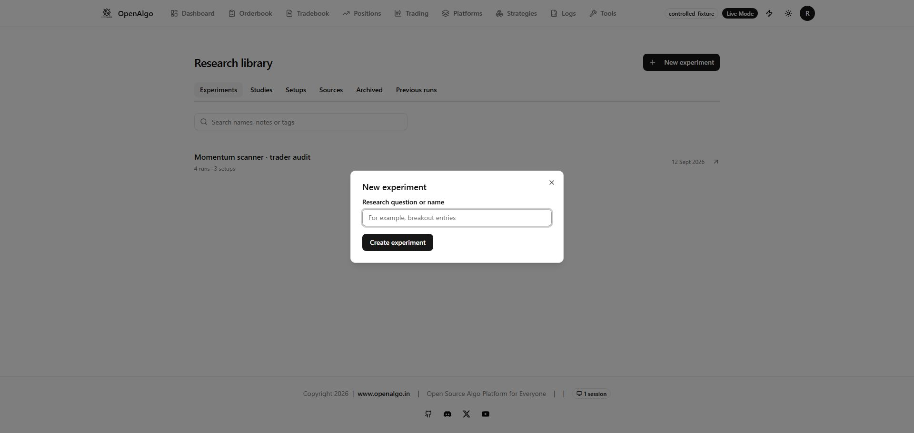
Step 03 · J01, J02
Clear capital and input area. Eight tabs appear immediately, and a second name defaults to My portfolio. Saved and Save setup need clearer roles.
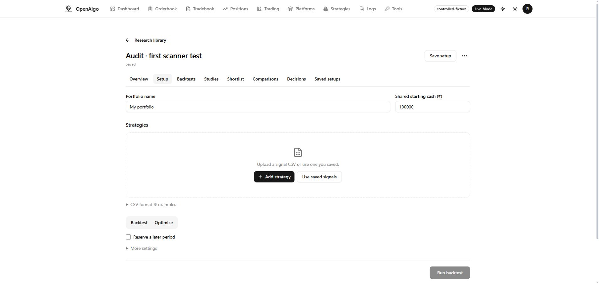
Step 04 · J02, J05
Existing source dates, signal and symbol counts are useful. Selection adds the saved input without another upload. Fresh Chartink capture was not repeated.
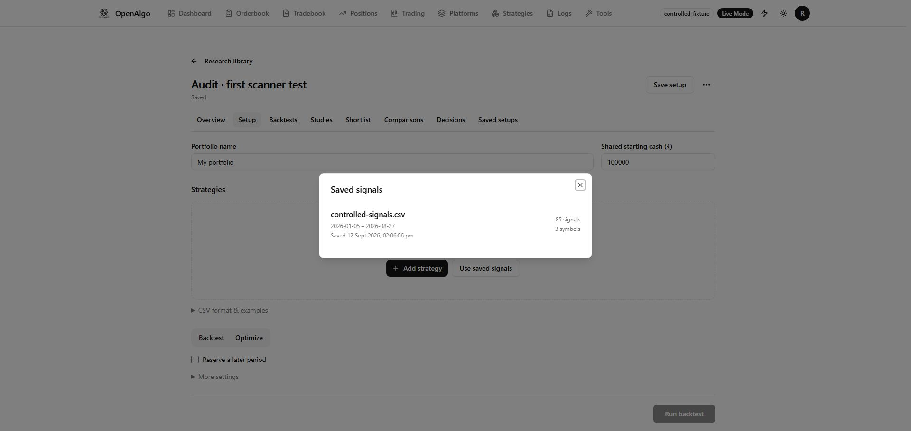
Step 05 · J02, J09, J11
TP, SL, holding, trailing and costs are available in a relevant drawer. The main strategy row should summarize the active rules; the trader should not have to open every drawer to discover defaults.
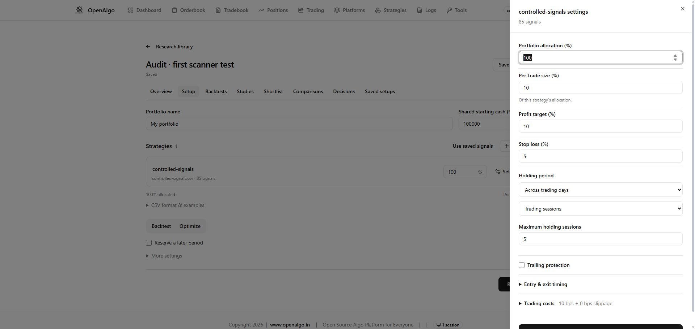
Step 06 · J06, J10, J19
Suggested ranges and a 25-trial default remove the old empty-search trap. Show actual reserved dates and effective cohort before running. The data planner, not the user, chooses the required interval.
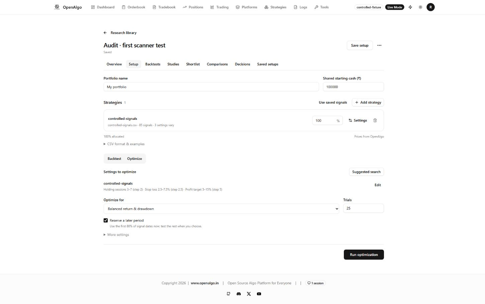
Step 07 · J06, J12, J26
This is actual 5/25 Optuna progress with CSV dates, not a simulated animation. Cancel and Activity exist; genuine pause and completed-study extension need a lifecycle contract. No broker speed was measured here.
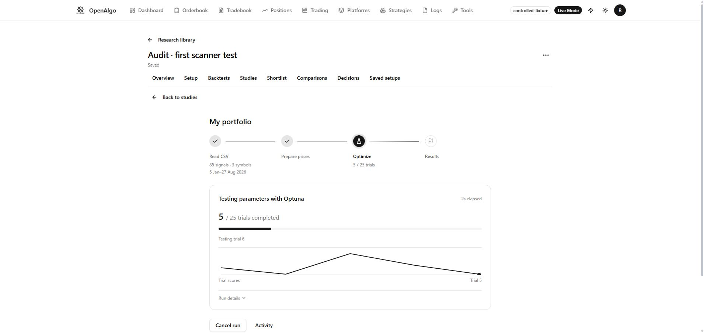
Step 08 · J10, J12, J13
Formula, period and real proposal/repeat counts are clear. A trader also needs return/risk and an obvious next research action; Best report is an objective leader, not a chosen setup.
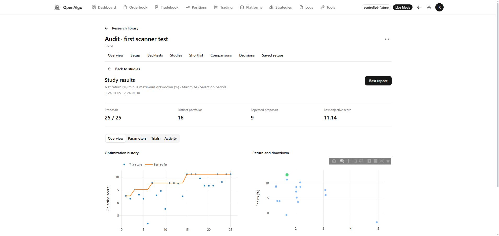
Step 09 · J13, J14, J16
Native importance, slice and contour views are meaningful. Clicking an observed point led to real proposals. Preserve this link; refine the jargon and add deliberate child-search actions later.
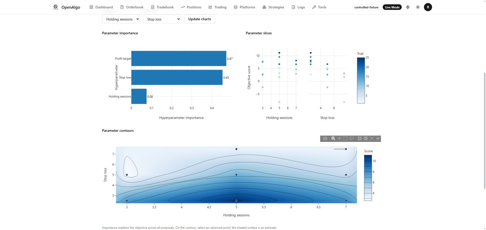
Step 10 · J13, J17
An overlapping contour point opened a real trial chooser. The selected trial has an in-place settings/statistics dialog and Shortlist confirmation. This solves the former bottom-of-table detour.
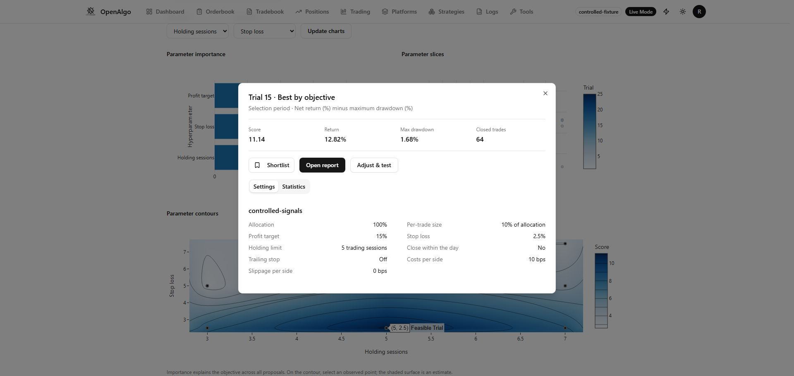
Step 11 · J07, J27, J34
The continuous account report is strong. This capture also illustrates inherited scroll: opening from Parameters initially left the new report identity above the viewport. Forward entry and return restoration need different rules.
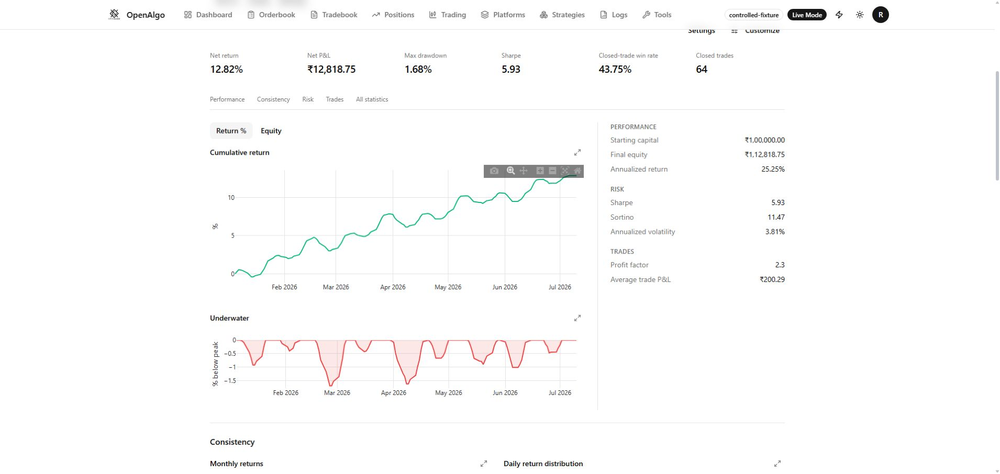
Step 12 · J08
The saved window is highlighted on full account charts, with overlapping trades and explicit closed-trade versus marked-account meaning. Keep the contextual investigation.
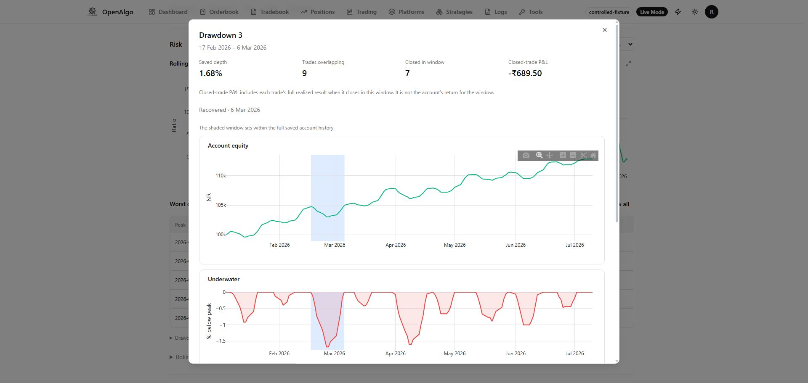
Step 13 · J08
The next action opens all trades for a symbol. The selected drawdown window and exact trade are lost; a brief outcome reason is not yet a candle/fill/rule/cost explanation.
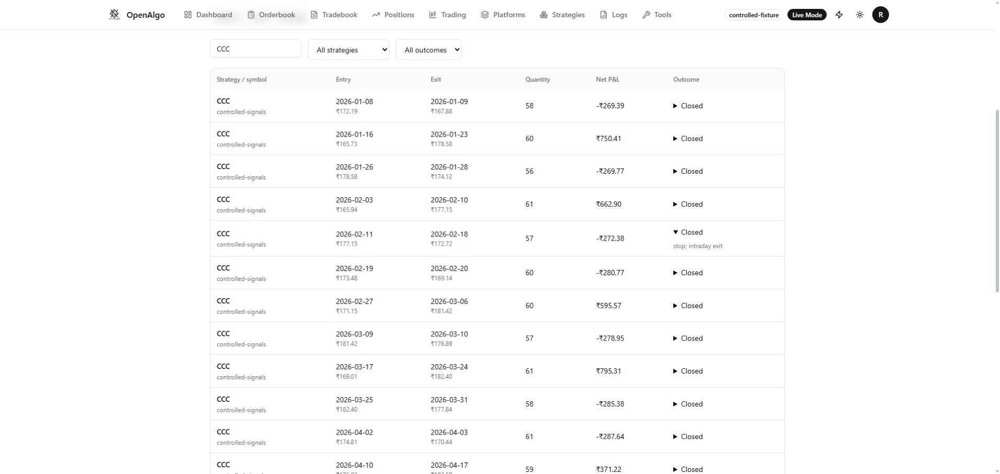
Step 14 · J19, J28
Test later period successfully calculated this child report with Later period and trial identity. Its primary action is Optimize this; validation should lead to comparison/decision with the original selection context.
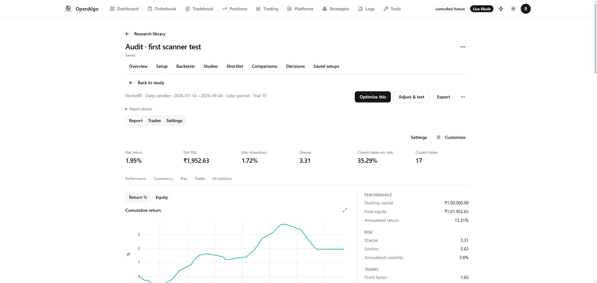
Step 15 · J01, J27, J29
Three different backtests have the same name, date and Results ready label. Continue setup is still primary. Show baseline/candidate/later roles and continue the actual research task.
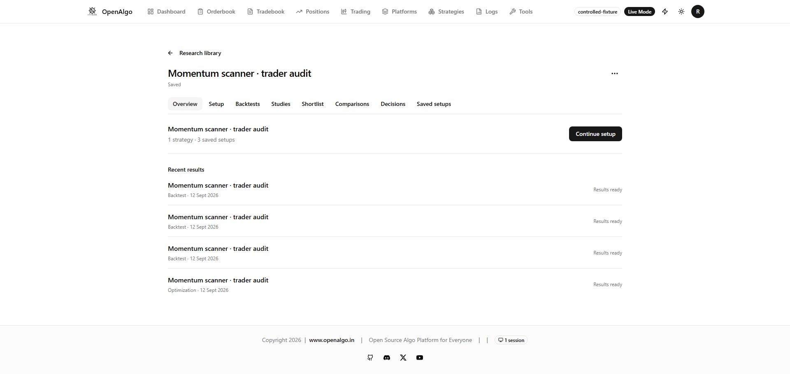
Step 16 · J17, J18, J28
The shortlist distinguishes actual trial and period. It offers comparison of 2–4 reports, but a single result cannot receive a direct decision. Retaining one idea should not require another backtest.
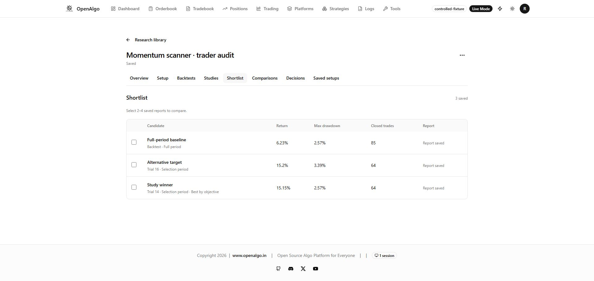
Step 17 · J18
The app correctly withholds deltas and a combined curve. Six technical mismatch labels need a primary date/condition explanation and a precise matched-baseline repair action.
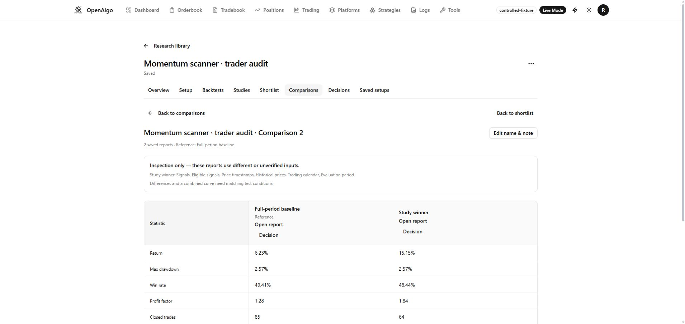
Step 18 · J18, J19
Real metric differences use a declared reference. There is no action here to prepare missing reserved validation for the selected exact nonwinner. Keep the gate; finish the next step.
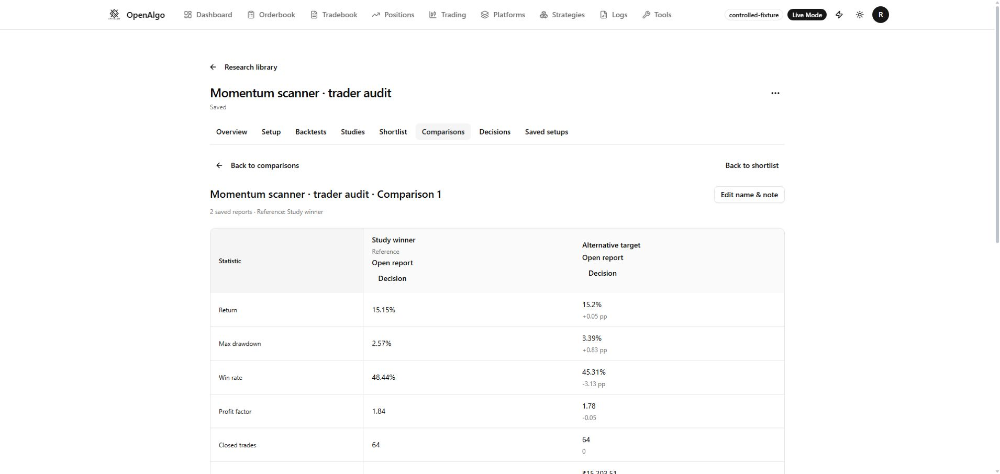
Step 19 · J28
Keep/Reject/Revisit, optional reason and existing exact later evidence fit a small dialog. Saving worked. Missing later evidence cannot be created here, and the decision currently requires comparison membership.
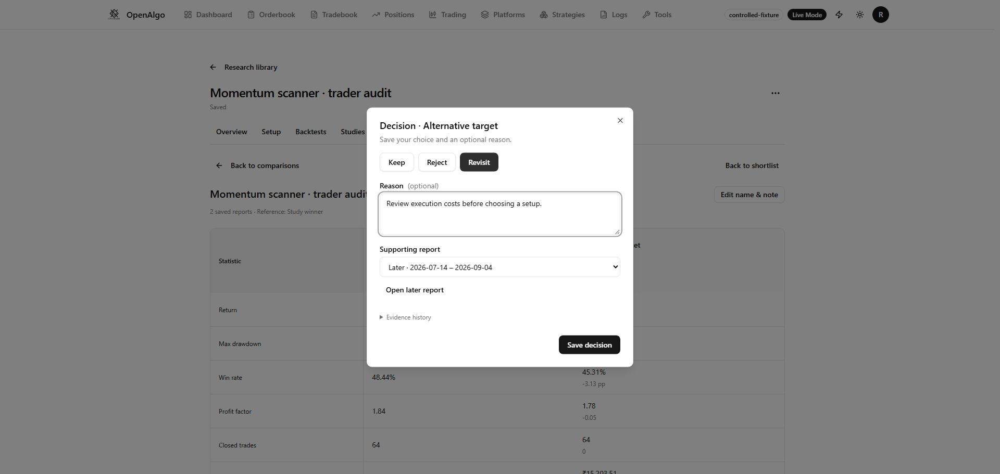
Step 20 · J27, J28
The saved reason, revision and exact report links remain available. The conclusion does not yet become a chosen reusable setup or a clear next review task.
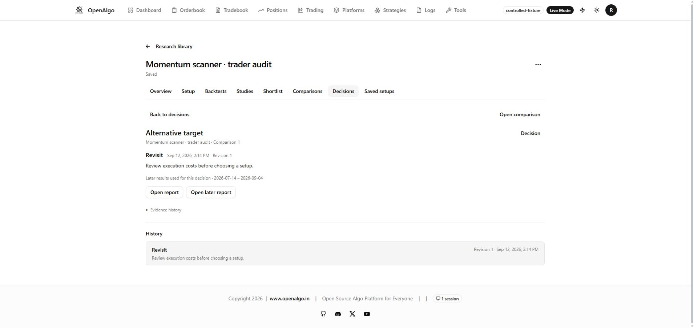
Step 21 · J09, J24, J27
Use setup loads a saved configuration. Setup 1/2/3, date and strategy count do not explain which rules changed, which result it produced or which setup was chosen. Add a preview and meaningful name.
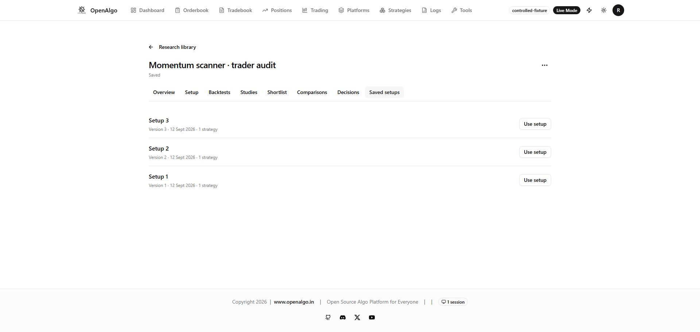
Step 22 · J10, J13
Sortable risk/return statistics, distinct/all-proposal views and local details are useful. Open report versus View report should clearly distinguish a saved result from an action that may require calculation.
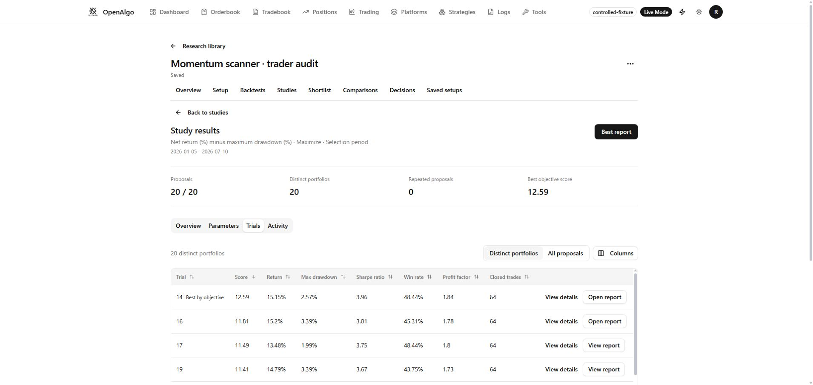
Step 23 · J07, J13, J34
Two Starting capital choices have the same label; other original/catalog overlaps exist. Reconcile equivalent financial concepts while preserving different definitions and old evidence. Search matches descriptions too.
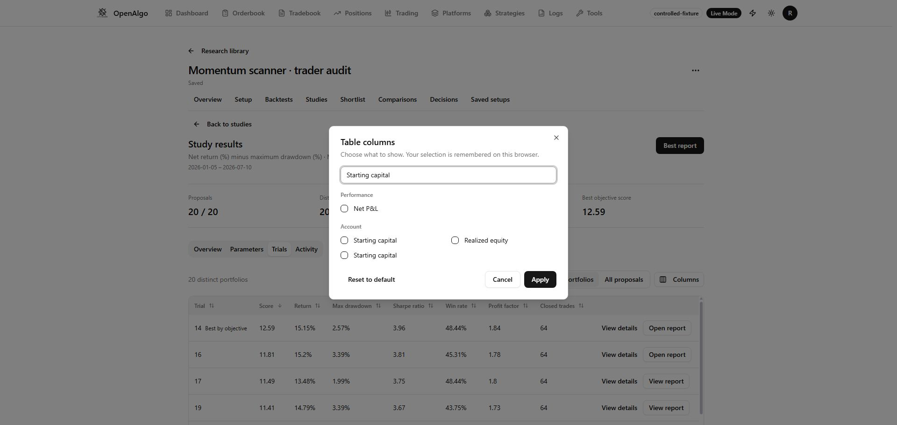
Step 24 · J13, J27
Responsive stacking works at 390px. Eight experiment tabs require horizontal discovery, and the study summary occupies nearly a screen before the first trial.
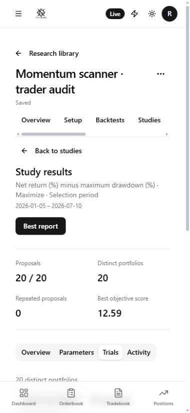
Step 25 · J13, J34
Nested scrolling and a wide table leave risk and row actions offscreen in the initial view. Provide a compact candidate row with return, drawdown and a visible details action.
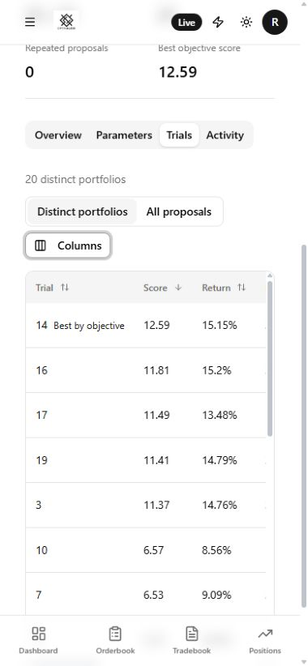
Step 26 · J18, J34
The checked native dark comparison is legible and restrained. This single screen does not establish full contrast, chart accessibility, keyboard or reduced-motion compliance.
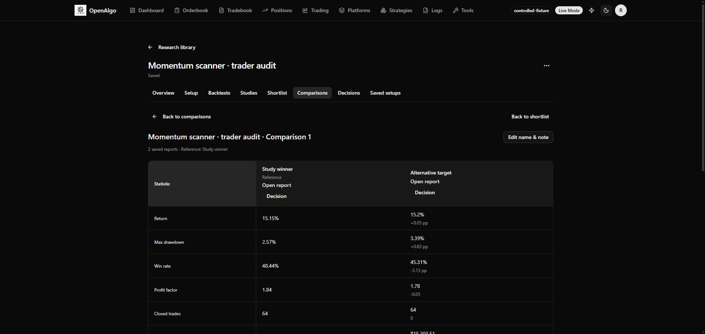
Observed = fresh controlled UI evidence. Code = inspected implementation only. Planned = no complete native journey. Partial can include strong implemented foundations.
| Journey | Current health and evidence | Remaining outcome |
|---|---|---|
| J01 Capture an idea | Working core · observed 01–03, code library | Clear naming and stage-aware overview; notes/tags available in details |
| J02 Test existing signals | Working core · observed saved-source and calculation paths 04–07; fresh upload/extension not repeated | Compact resolved input/rules review; explicit signal-CSV scope |
| J03 Build signals from rules | Planned · code | Causal template/indicator connector, feature warmup and source versioning |
| J04 Import outside research | Planned · code | Distinguish reproducible setup/report import from an attachment or signal file |
| J05 Resolve ambiguous input | Partial · code parser | In-place symbol/time/column mapping with preview and saved interpretation; no broad silent guesses |
| J06 Prepare missing data | Strong core, partial repair journey · code; 07 progress only | Actual requirement summary, contextual repair and authorized cold/warm broker receipts |
| J07 Read a baseline | Partial · observed report surfaces 11–14, code | Matched baseline identity, native benchmark and direct retained decision |
| J08 Diagnose a loss | Partial · observed 12–13 | Preserve window and exact trade into candle/fill/rule/cost detail and back |
| J09 Adjust a known setup | Working core · source verified; actions observed 10–14 | Show parent/diff and offer a financially valid paired comparison |
| J10 Optimize settings | Working search, partial research setup · observed 06–10, 22 | Actual reservation/cohort review, baseline relation and separately versioned eligibility constraints |
| J11 Optimize allocations | Partial · code only | Compose saved components, show shared-cash/risk meaning, supported concentration constraints |
| J12 Monitor a search | Partial · observed live trial progress 07; activity source verified | Pause/stop segments and useful partial-result continuation |
| J13 Explore parameters | Working core · observed real contour-to-trial 09–10 | Preserve full view state; make a selected region a deliberate child hypothesis |
| J14 Test a manual hypothesis | Partial · code; Adjust action visible | Explicit manual candidate provenance; adding a proposal to an existing study is not implemented |
| J15 Continue unchanged study | Planned complete continuation · code | Separate scientific identity/budget, retained sampler state and Add trials |
| J16 Refine a search | Partial · code; editable search visible | Named child study with changed ranges/reason, proper reuse rules and return |
| J17 Shortlist candidates | Working core · observed 10, 16 | Visible current decision, optional global retrieval when needed, chosen-setup distinction |
| J18 Compare fairly | Partial with sound gates · observed 17–18 | Matched-baseline repair, actual assumption differences and canonical validation action |
| J19 Evaluate reserved data | Partial · original winner exercised 14; missing candidate path code verified | Exact nonwinner launch, exposure review and linked selection/later decision flow |
| J20 Walk forward | Planned · code | Frozen window/refit/carry-reset/aggregation contract before charts or scheduling |
| J21 Stress assumptions | Planned coherent scenario journey · code | Recorded cost/slippage/delay/neighborhood scenarios and degradation results |
| J22 Transfer market or period | Partial within cash scope · code | Explicit new-universe/date recipe, changes and admitted instrument profile |
| J23 Explain engine disagreement | Planned · code | Equal-input rerun and first material order/fill/account difference; no engine voting |
| J24 Combine strategies | Partial · code shared-cash core | Use chosen saved components; distinguish contribution from standalone counterfactuals |
| J25 Inspect exposure/capacity | Partial · exposure surfaces code verified | Concentration/correlated-loss investigation; capacity only with relevant liquidity evidence |
| J26 Recover interrupted work | Partial with durable safeguards · code, not interrupted this audit | Precise saved-work/repair/resume flow; real pause is a separate capability |
| J27 Return days later | Partial · observed 15, 20–21 | Find the actual last task and chosen result; restore context beyond a browser session |
| J28 Keep/reject/revisit | Partial · observed saved decision 19–20 | Direct single-result decision, chosen reusable setup and clear next review |
| J29 Reproduce versus refresh | Partial · code; report actions observed | Explicit newer-data run with retained source/settings diff; old inspection stays download-free |
| J30 Export/share | Partial · export action observed; source evidence bundle code verified | Self-contained readable report with optional study/comparison/decision appendix |
| J31 Review paper/live observations | Planned · code | Separate opt-in observation connector linked to an exact chosen setup; no automatic execution |
| J32 Organize/retire | Partial · code library/archive/retention | Better retrieval/status and complete chosen-research retirement; archive is not cancel or delete |
| J33 Upgrade/change broker | Partial · fresh installed-file/health check, rest code/history | Exact release upgrade/restore and per-broker/profile/interval admission; old evidence stays readable |
| J34 Multiple tabs/devices | Partial · code revisions/ownership; no fresh concurrency test | Full view restoration and conflict acceptance across authenticated sessions |
These are current screenshots and a proposed development sequence. No proposed redesign is presented as shipped. Exact source anchors and asset admission boundaries are in the accompanying Markdown audit. Screenshot links open the original accepted capture.